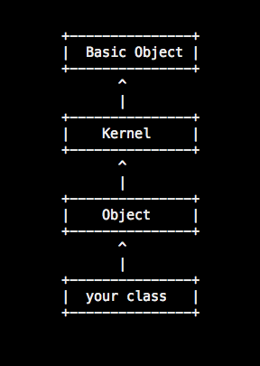

method
missing
Andrea Nodari
@andreanodari
nodo.github.com
About me

About me (really)
Student @ UNITN
Web dev @ ICT4G Unit
<3 Ruby
<3 Ruby on Rails
... from Brescia :)
Inheritance CHAIN

Default

override it

GIMME CODE!!!
class Fixnum
def is_it_super_cool?(string)
string =~ /dollars?/
end
def method_missing(method, *args)
self * 1.3185 if is_it_super_cool(method.to_s)
end
end
Watch out!

REAL LIFE EXAMPLE
-
Remove code duplication
-
Dynamically defined method
rails

rubyredis
class RedisClient
# ...
def method_missing(*argv)
call_command(argv)
end
def call_command(argv)
argv[0] = argv[0].to_s.downcase
# ...
@sock.write(argv.join(" ")+"\r\n")
# ...
read_reply
end
# ...
end
rubyredis
def [](key)
get(key) # ghost getter
end
def []=(key,value)
set(key,value) # ghost setter
end
# ...
redis = RedisClient.new
redis.set(:x, 42)
x = redis.get(:x)
redis[:y] = 42
y = redis[:y]
Resources
Thanks
:-)